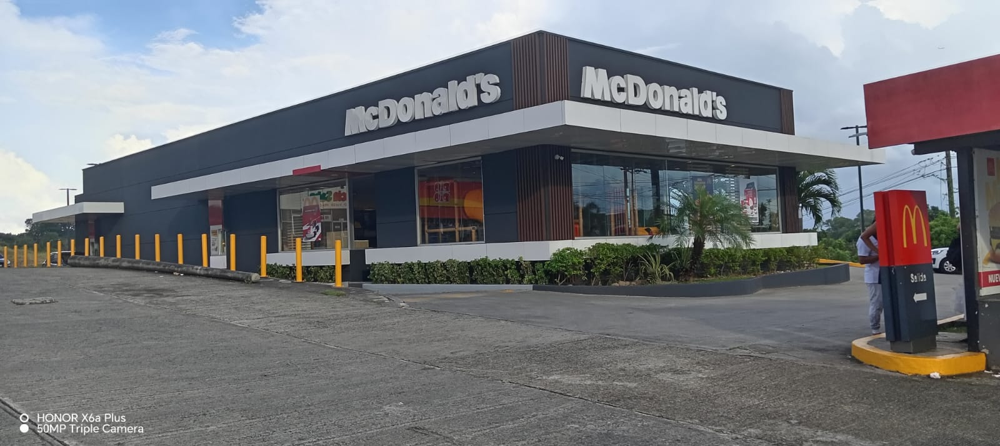
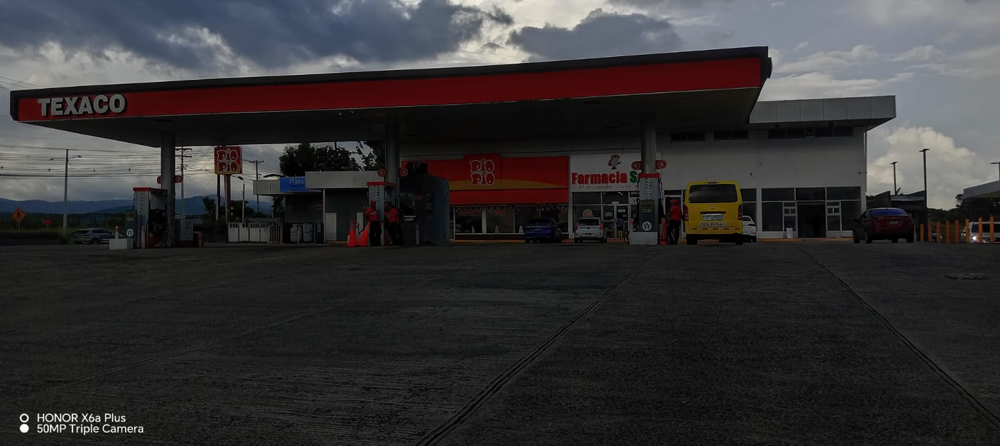
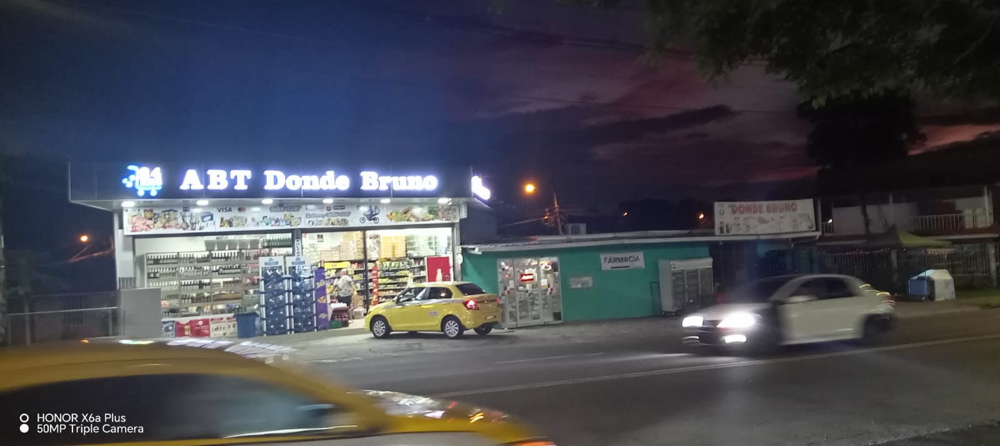
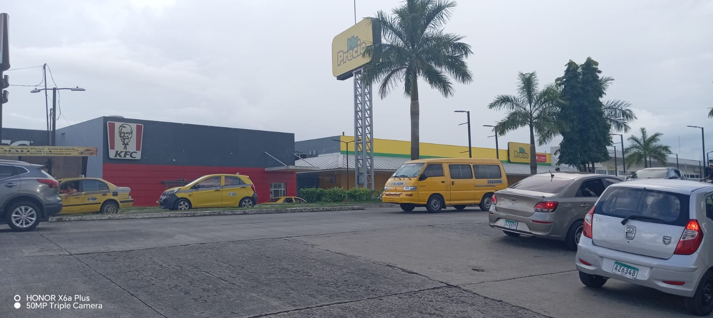
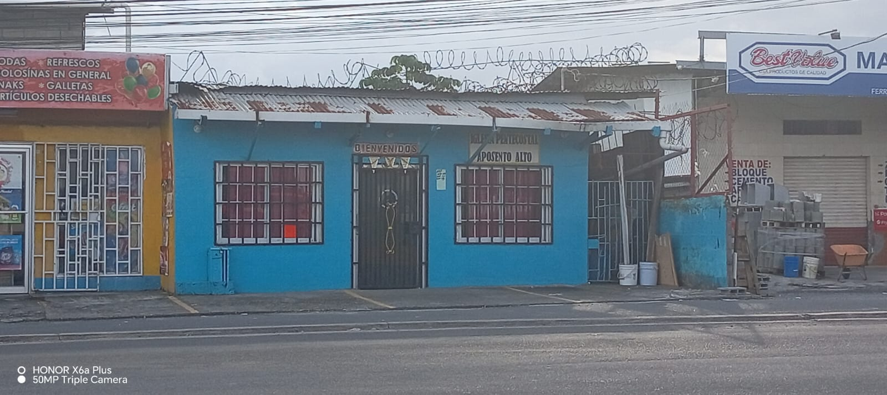
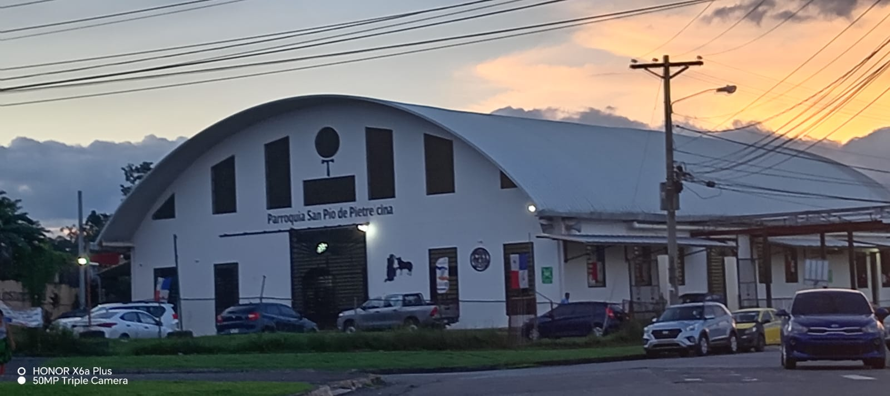
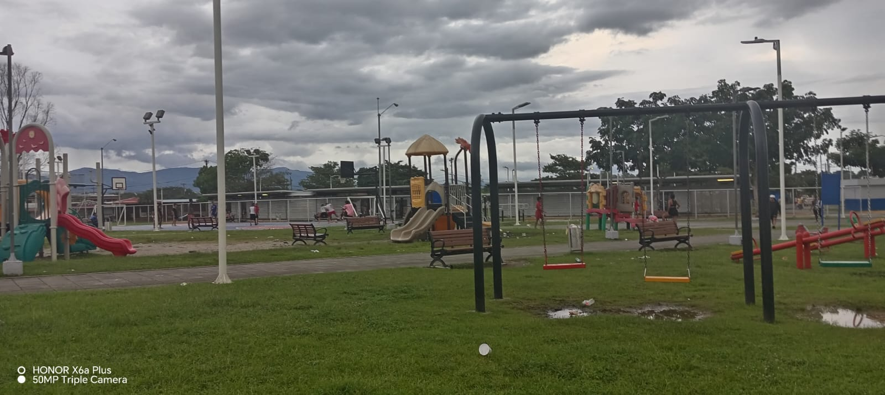
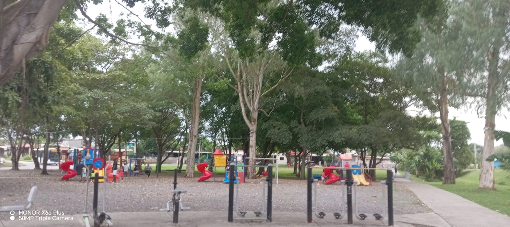
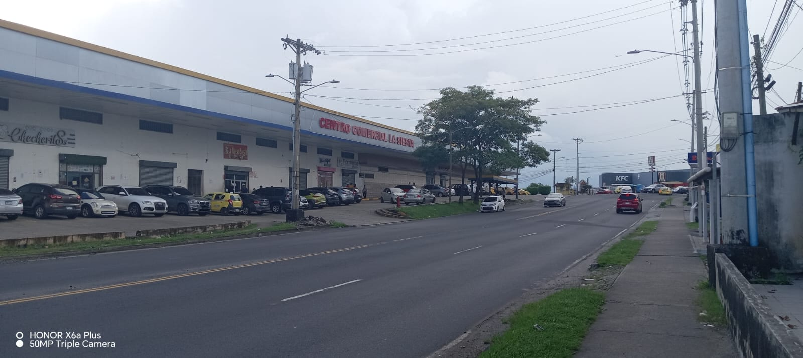

urbanizacion la siesta
 
Plazas comerciales
 instituciones con la que cuenta la urbanizacion la siesta
 Algunos parques
 Esta barriada es utilizada de manera residencial y se divide en diferentes áreas (villa La Siesta, Santa Fe, Buena Vista, etc) que abarcan casi toda la barriada. Los hogares por lo general consisten en familias de 4 hijos en adelante por ende son hogares y un residencial muy poblado.
En cuanto a la economía esta barriada ha ido progresando poco apoco debido a que los pobladores han invertido en los comercios generando en puestos de trabajo para venta de comidas, tiendas, sastrerías, ventas de frutas. ofreciendo a los moradores diferentes servicios entre lo que también podemos mencionar: panaderías, ferreterías, abarroterías y tiendas de chinos.
La Urbanización La Siesta cuenta con dos plazas comerciales que mantienen sus puertas abiertas desde hace cinco años. La Plaza La Siesta está ubicada frente a la bomba Texaco y el McDonald compuesta por diferentes locales como gimnasio, supermercados, almacenes, pizzerías etc.
En el Centro Comercial La Siesta igual que La Plaza La Siesta se encuentran diferentes locales que prestan sus servicios y dan empleos a los pobladores del lugar. en este centro comercial podemos también encontrar supermercados, tiendas, restaurantes de comida rápida (KFC).
En la barriada La Siesta contamos con tres Iglesias.
La Iglesia San Pio de Pietrelcina. Esta última la cual en los primeros años de inicios de la barriada fue un rancho solo de zinc. Fue construida exactamente en el 2019 a raíz de la celebración de la JMJ celebrada en Panamá en dicho año con el fin de albergar gran cantidad de peregrinos de diferentes lugares. Como iglesia católica que se realizan bautizos, primera comunión, confirmación, matrimonios, confesiones, celebran muchas actividades como día de la madre, día del padre, viernes santo (vía crucis por las calles de la barriada), navidad (villancicos por las casas de la barriada) y muchas actividades mas como juegos de futbol, ventas de comidas, procesiones etc.
En esta barriada tenemos una estación de policía, ubicada en la entrada de la barriada. A inicios de la llegada de la población a la urbanización La Siesta la escuela contaba con un pabellón y dos aulas de madera, en esos tiempos algunos estudiantes utilizaban como escuela el centro comercial La Siesta ubicado en la entrada de la barriada. Años más tarde el C.E.B.G La Siesta fue fundado en el año 2004, tiene el nivel de primaria (1º-6º grado) y también el nivel de pre-media (7º-9º año), cuenta con una matrícula de alrededor de 1500 estudiantes de primaria y 500 estudiantes de pre-media. Actualmente su director es Sammy Arrocha. este centro educativo esta ubicado frente a la zona paga de La Siesta.
Existen algunos parques
Las áreas verdes o de recreación son tan importantes ya que estos permiten la convivencia armónica entre los pobladores, así como el intercambio de cultura y costumbres que destacan a una barriada de la otra y que de ese mismo modo permite a las familias un momento de esparcimiento y alegría al momento de utilizar todas estas zonas dedicadas a esta actividad. La Barriada La Siesta posee dos parques con diferentes juegos para los niños.
Complejo cultural y deportivo que permite diferentes actividades deportivas y culturales que fomentan el carácter positivo de los niños y jóvenes que asisten a estas actividades y lugares. Este complejo cuenta con una biblioteca, ofrece cursos, talleres, clases de danzas, clases de músicas, para el verano ofrece diferentes programas. También es utilizado para diferentes actividades deportivas (futbol, voleibol, karate, baloncesto etc.) participan desde niños, jóvenes y adultos . que llegan de diferentes lugares.